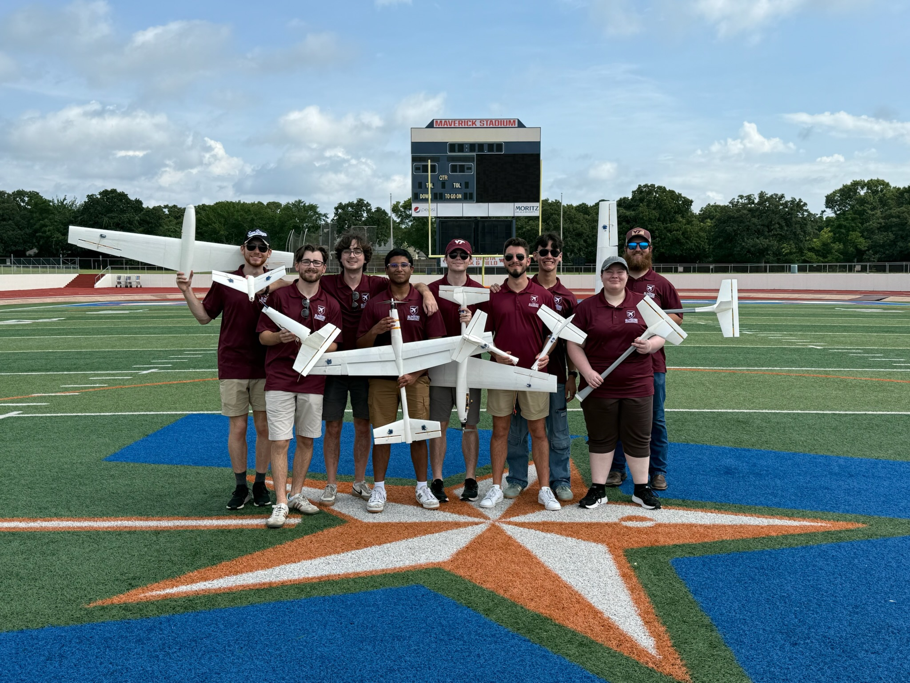
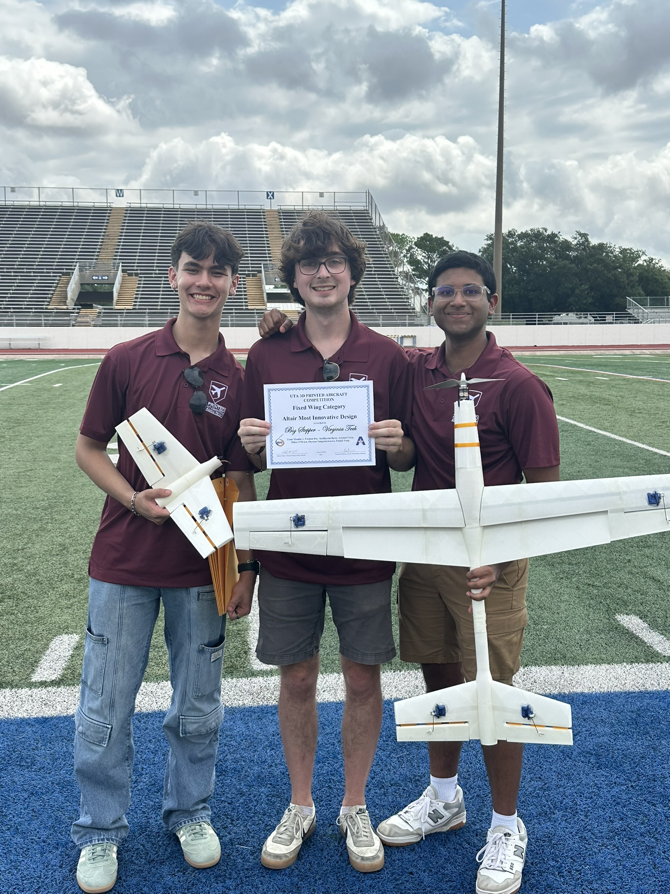
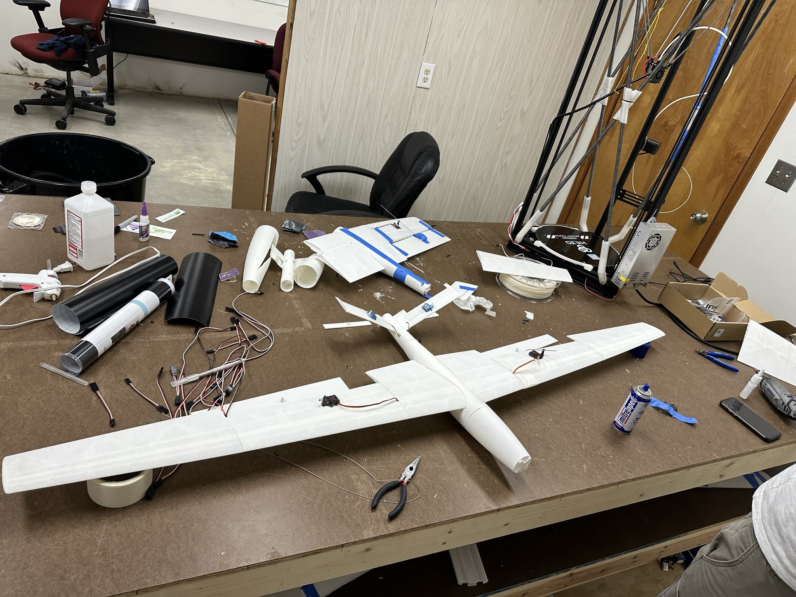
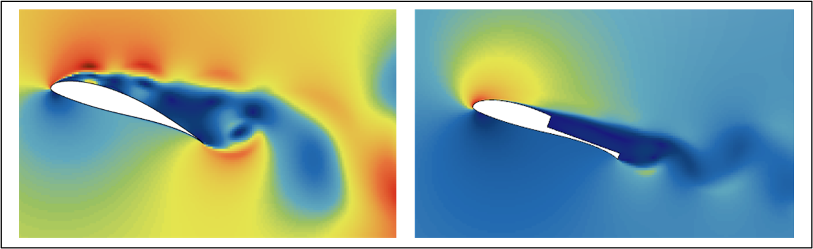
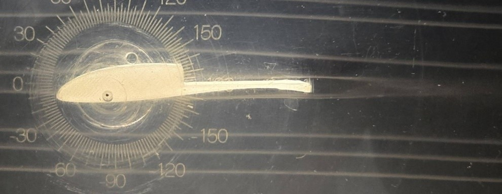
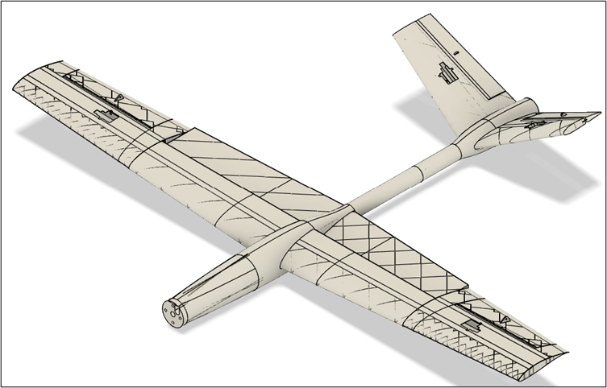
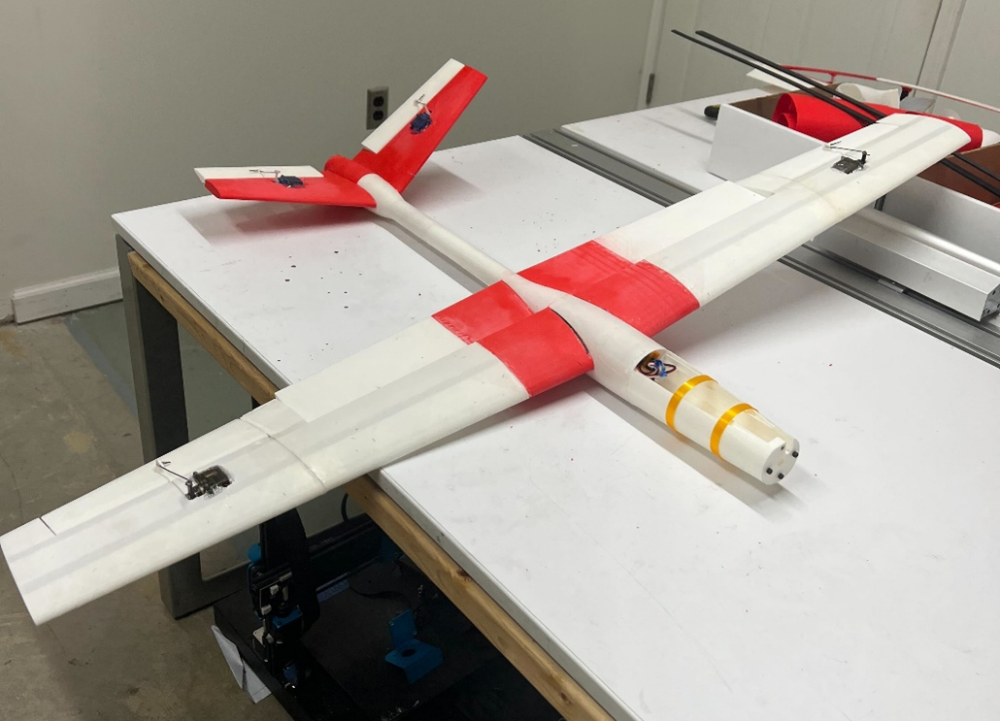
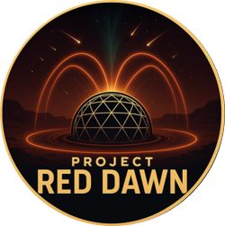
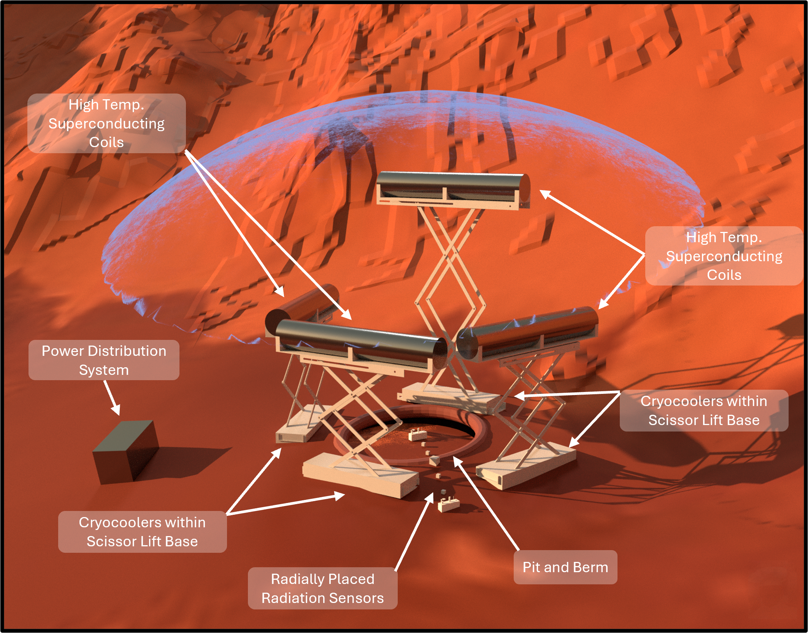

3D Printed Aircraft CompetitionThe Competition
During my time Tech, I spent three years on the 3D Printed Aircraft Competition (3DPAC) team. 3DPAC competes at the national competition hosted by UT Arlington every year. The competition is simple: design an aircraft and 3D print every piece of it. Having a strong foundation in 3D printing and interest in aerodynamics, it was a no brainer to join the team.


Wavy
My first year on the team, I worked on Wavy, a fixed-wing aircraft with a hybrid-style design. My main contributions were remodeling and printing the V-tail boom and designing the wing's internal load-bearing structure. This was my first time touching every part of the design process end-to-end, from aerodynamic design, to CAD, to printing, and test flights. It gave me a strong sense of everything that goes into a 3D printed aircraft.
Wavy sparked what became a long-term obsession with V-tail configurations. There's just something fun about the challenge of hybrid control surfaces (like ruddervators). More on this obsession below.
After getting stranded in the Atlanta airport and sleeping in the terminal, I barely made it to Arlington in time for comp. It was completely worth it though. Wavy placed 2nd in the fixed-wing category, and our other aircraft, Blended, took home the Most Innovative Design award.
Shout out to Jay, Andrew, Colby, and Karin!!

Big Stepper
By 2024, I became the Printing & Manufacturing Lead and a lead for one of our three competition aircraft, Big Stepper. This was a big redemption year for 3DPAC after walking away empty handed at comp in 2024. This year, my team decided to go all-in on something new: a custom stepped airfoil that our team designed completely from scratch. Our design was validated through CFD, wind tunnel testing, and flight tests. Our final airfoil design generated 40% less drag than the equivalent "unstepped" airfoil.
On top of the stepped wing, we also decided to take another stab at the V-tail concept. I was stoked to be trying this again. We iterated through many different designs, eventually getting to a super lightweight and controllable version of our stepped wing, V-tail aircraft.
We took no chances travelling this year, and instead of flying down to comp, 6 of us packed into a 12-person van and drove from VA to TX with 9 planes, spare parts, and a 3D printer loaded in the back. Despite the brutal drive, we had an awesome week in Arlington, and the best part, Big Stepper walked away with the Most Innovative Design award. This was honestly one of my proudest accomplishments during undergrad.
I'm super grateful to have led such an amazing team on Big Stepper!! Shout out to Shyaam, Ethan, Artemis, and Daniel. You guys rock.




Printing & Manufacturing
Being a lead on 3DPAC was an extremely rewarding experience. As the Print & Manufacturing Lead, I owned everything to do with the printers and building the aircraft. From scheduling, slicer settings, part iterations, and manufacturing problems across every plane. At its peak, the team had 9 aircraft in production at the same time, with different materials, requirements, and deadlines.
It wouldn't have been possible without my P&M co-lead Tom, who would tackle all these problems with me head on. Late nights diagnosing and fixing printers created an awesome friendship. Tom and I transformed a messy, dysfunctional lab into an environment we were actually proud of, built completely around 7 different printers.
The most rewarding part about being a lead was mentoring members and watching them grow into their roles. Seeing them get excited about their own ideas and test them out was awesome. Huge shout out to my co-leads Tom, Anthony, and Seth for reviving 3DPAC with me.


NASA RASC-AL · Senior CapstoneProject Red Dawn
For my senior capstone, I served as Structures Lead for Virginia Tech's entry in the NASA RASC-AL competition under the theme "Advanced Science Missions and Technology Demonstrators for Human-Mars Precursor Campaign." Our team, Project Red Dawn, designed an Expandable Superconducting Magnetic Radiation Shielding (ESMRS) system: a deployable array of superconducting coils that generate a magnetic field strong enough to deflect radiation particles.
The core of the system is four coils. Once deployed on the Martian surface via scissor lifts, the coils expand under magnetic pressure to create a safe zone for crew and electronics. The whole system is sized to fit inside a SpaceX Starship payload bay and autonomously deploy after landing.

Structures Lead
My job was to oversee the design and validation of the structures that hold this whole thing together, primarily the strongback (a load-bearing carbon fiber backbone inside each coil). The strongback has to survive both the loads from the Starship launch, as well as the magnetic forces during operation. The magnetic loads are actually the dominant design requirements because they were so strong.
We ran static and dynamic FEA simulations, including frequency analyses to check for vibrational issues during launch. I also validated the scissor lift structures that elevate each coil to its operational height of up to 9 m once deployed. Beyond the structures work, I was involved in the systems-level design process to make sure every subsystem complied to our requirements.
Huge shout out to my team for bringing me into the group: Al, Josh, Ally, Olivia, Wheat, Nick, Connor, Erik, Celia, Jayden, and Pramil.